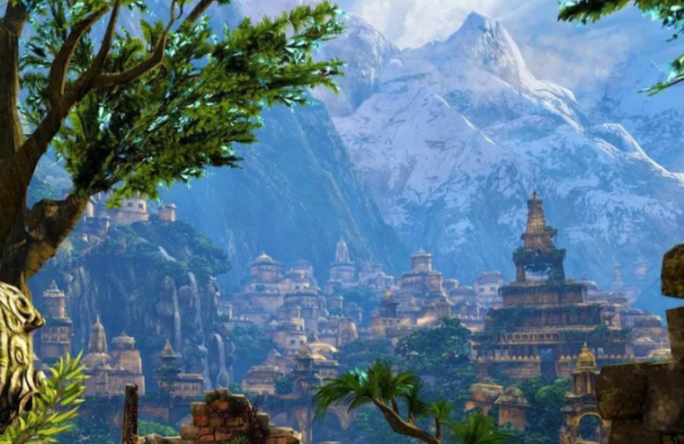
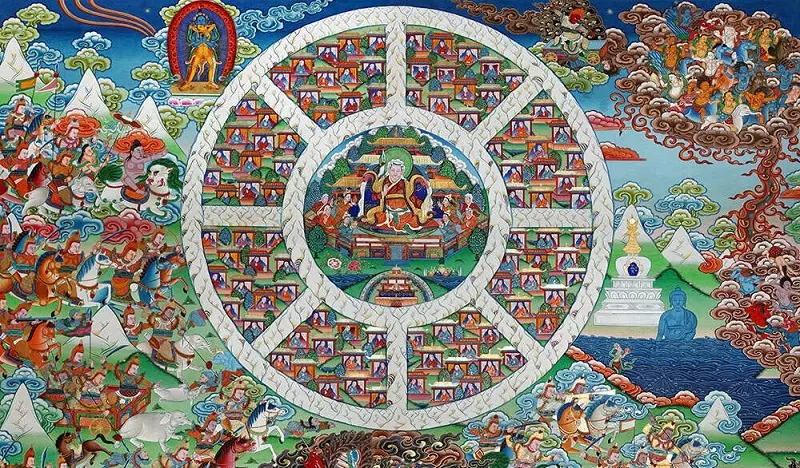
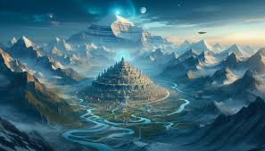
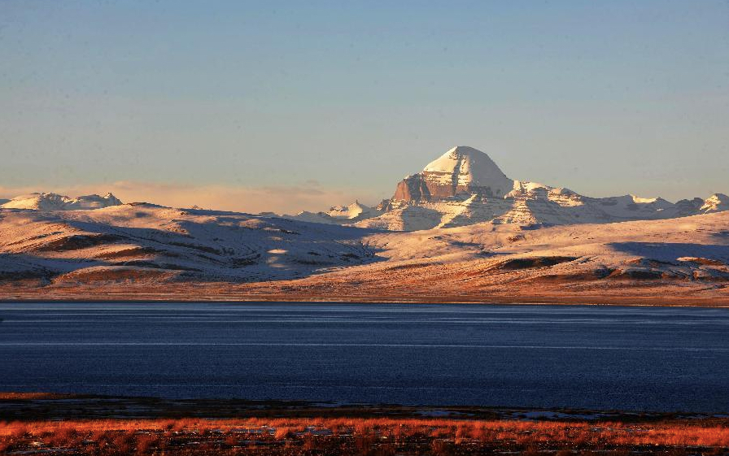
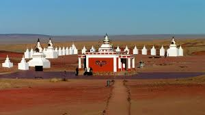

SHAMBHALA

Introduction
For thousands of years, stories have been told of a mystical paradise called Shambhala. Hidden within the Himalayan Mountains, it has come to be known by many other names: Shangri-La, the Land of White Waters, the Forbidden Land, the Land of the Living Gods, the Land of Radiant Spirits, and the Land of Living Fire. The Chinese call it Hsi Tien. The Hindus call it The Land of the Worthy Ones or Aryavartha. The Russians refer to it as Belovoyde, and to the Bön, it is called Tagzig Olmo Lung Ring.
Descriptions of the realm of Shambhala are based both on writings purportedly originating from Shambhala himself and on later, primarily Tibetan, commentators who claimed to have visited the realm in the material realm, on an etheric plane, in dreams, or by other means.
Some Tibetan sources maintain that the kingdom that became Shambhala was originally ruled by a member of the Sakya clan named Shambhaka and that the word "Shambhala" is based on his name. These same sources state that the word "Shambhala" means "Held by the Source of Happiness" in Tibetan. The earliest written accounts of Shambhala are believed to have been in Sanskrit, however, and it should be noted that contemporary scholars are not at all sure of the etymology of the word in either Sanskrit or Tibetan.

Tibetans have, in fact, taken the Sanskrit name Shambhala to mean "the Source of Happiness."6 But this does not mean that Shambhala is merely a paradise of languid bliss, as our descrip tion may have implied. Such places do exist in Tibetan mythol ogy: If a person does good deeds and acquires enough merit, he will be reborn in a heaven of the gods, where he will have every thing he desired on earth-youth, beauty, riches, power, and sen sual delights. But there is a catch: After hundreds of years of blissful life as a god, he will exhaust his store of merit, and per spiration will begin to soil his clothes and make him smell. Then he will know that death is near, and he will suffer all the anguish he has temporarily avoided; he will die and be reborn again, but this time in hell.
Given their reasons for believing that Shambbala exists, where do Tibetans think it might actually be? Here they become vague and uncertain and express a number of different opinions. A few think it might be in Tibet, perhaps in the mysterious Kunlun Mountains; more point toward the region around Mongolia and Sinkiang Province of China; but most believe that Sharnbhala is in Siberia or some other part of Russia. Some Tibetans think that one must go still farther north to find the kingdom hidden in the icy wastes of the Arctic. A few lamas even guess that Sbambhala exists outside the earth on another planet.
Having examined Tibetan beliefs about the existence of Shambhala we will now look into the question of how the kingdom migh; exist from a modem point of view. The answers to this question are of interest to Tibetans as well as to Westemers. Many of the younger generation have grown up under the influence of Western ideas and have abandoned their elders' mystical views of reality. As a result, the younger people tend to dismiss Shambhala as superstitious fantasy or to regard it as an immaterial paradise of the afterlife. Worried that this trend may undermine Tibetans' belief in more fundamental religious beliefs, some lamas, such as the Dalai Lama and the Sakya Trizin, are looking for scientific arguments to persuade the younger generation that Shambhala could indeed exist.
Literary
History of the kings of Shambhala, which some Western scholars think may be based on actual fact. Since these texts have very little interest in what happened before the advent of Buddhism around 500 B.C., they tell us almost nothing about the origins of the kingdom. The few lamas who talked about it said that Shambhala has existed since the beginning of the world but little is known about its early history. They guessed that it had Kings and a religion that made it a better place to be than else where-but they added that the religion was not Buddhism.
Other legends tell that the kingdom of Shambhala disappeared from the earth many centuries ago. At a certain point, the entire society had achieved enlightenment, and the kingdom was transformed into a more celestial realm. According to these tales, the Rigden kings of Shambhala continue to watch over human affairs and will one day return to earth to save humanity from destruction. Many Tibetans believe that King Gesar of Ling, the great Tibetan warrior, was inspired and guided by the Rigdens and Shambhala wisdom. This reflects the belief in the celestial existence of the kingdom; it is believed that Gesar did not travel to Shambhala and that his connection to the kingdom was spiritual. He lived around the 11th century and was king of Ling Province in eastern Tibet. At the end of his reign, stories and legends about his achievements as a warrior and ruler spread throughout Tibet and eventually became the most important epic in Tibetan literature. Some legends claim that Gesar will return from Shambhala, leading an army, to subdue the forces of darkness in the world.
According to both Buddhism and Hinduism, Shambhala foretells the return of an ancient Tibetan hero called Gesar of Ling as well as the reign of the final incarnation of Vishnu. They will bring forth a new age of peace and wisdom. This will supposedly take place in 2424-2425.
Depending on the source, Shambhala takes on many different guises. Some say it is a physical place in the mountains, requiring dangerous travel and many physical and spiritual obstacles. Others say it lies underground deep within a hollow Earth. Some scholars believe it is simply symbolic or allegorical. The legend of Shambhala was the basis of James Hilton’s fictionalized account of Shangri-La, in his book Lost Horizon.
Between 1938 and 1943, Germany sent two expeditions to search for evidence of Aryan ancestors in Atlantis. What’s more, they aim to find the "Earth Axis World" which is capable of altering time and creating an immortal army. Upon reaching Tibet, anthropologist Bruno Beger measured Tibetan skulls, compared their hair with other ethnicities, and examined their eye colors. Local Tibetans mentioned a cave called Shambhala, filled with infinite energy and gold, which was roughly located at Mount Kailash. The German team returned in August of the following year with extensive research data, classified as top secret by Germany. Subsequently, experts in the USSR and USA linked Germany's advanced rocket, missile, and aircraft engine technologies to these Tibetan explorations.
Sven Hedin, a Swedish ex~ plorer who spent most of his life exploring Central Asia, found a lost city buried in the sands north of Khotan, a major oasis on the old caravan route between Europe and China, and wrote, "No explorer had an inkling, hitherto, of the existence of this an cient city. Here I stand, like the prince in the enchanted wood, having wakened to new life the city which has slumbered for a thousand years.
Some Western scholars have suggested that the Shambhala kingdom was actually one of the historically documented kingdoms from much more distant times, such as the Zang-zhong kingdom in Central Asia.
Since that time a number of poets, yogis, and scholars of Tibet and Mongolia have composed additional works on the hidden kingdom, many of which have been lost and forgotten. But the most secret aspects of Shambhala have never touched paper: They have been transmitted from teacher to initiated disciple by spoken word only. Lamas say that without these oral teachings many of the texts, which are written in obscure symbolic lan guage, cannot be properly understood. Io addition, laypeople have passed on numerous folk stories about Shambhala-some about the war and golden age to come, and others about the mystics who have gone there and the treasures they have brought back. A few artists have also painted rare paintings that show the Kings and their mystical kingdom surrounded by snow mountains.
The texts are much more specific about the kingdom itself and give a remarkably clear and detailed picture of it.4 According to their descriptions, a great ring of snow mountains glistening with ice completely surrounds Shambhala and keeps out all those not fit to enter. Some lamas believe the peaks are perpetually hidden in mist; others say that they are visible but so remote that few can ever get close enough even to see them. The texts imply that one can cross the snow mountains only by Hying over them, but lamas point out that this must be done through spiritual powers -whoever tries to go by airplane or any other material means will meet destruction on the other side. To emphasize that spirit ual powers are needed to cross the mountains, one painting I saw shows a group of travelers walking over a rainbow into Shambhala.
Helena Petrovna Blavatsky
Shambhala, originally a mystical kingdom from Tibetan Buddhist tradition, was reimagined by Helena Petrovna Blavatsky—the 19th-century Russian occultist and founder of the Theosophical Society—as a spiritual center of hidden masters and cosmic wisdom. In her esoteric worldview, Shambhala was not merely a legendary place in Central Asia, but a metaphysical reality and source of guidance for humanity’s spiritual evolution. Blavatsky claimed to be in telepathic contact with the enlightened rulers of Shambhala—beings she called the "Masters of Ancient Wisdom." These masters, including figures such as Morya and Koot Hoomi, were believed to reside in or near Shambhala and serve as intermediaries between higher spiritual laws and human consciousness. Through these connections, Blavatsky asserted that she received profound teachings about karma, reincarnation, cosmic cycles, and the inner structure of the universe. Rather than treating Shambhala as a purely mythological or geographical location, Blavatsky positioned it as both a hidden sanctuary and a symbol of higher consciousness. She associated it with the remnants of ancient civilizations like Atlantis and Lemuria, suggesting that Shambhala preserved their spiritual heritage and sacred knowledge. Within this framework, Shambhala became the esoteric heart of a planetary hierarchy working to guide the moral and spiritual progress of humanity. Blavatsky’s reinterpretation of Shambhala significantly shaped modern Western occult thought. Her ideas influenced later theosophists and spiritual explorers—most notably Nicholas Roerich and Alice Bailey—who expanded upon her vision of Shambhala as a living center of planetary wisdom and transformation. Today, her portrayal continues to inspire seekers and mystics who view Shambhala as both a spiritual ideal and a hidden reality accessible through inner development. In summary, Blavatsky transformed Shambhala from a distant legend into a universal symbol of enlightenment, linking Eastern mysticism with Western esotericism. Her teachings present Shambhala as a realm of higher intelligence and cosmic order—a beacon for those who seek the deeper truths beyond the material world.
The Chintamani Stone and Shambhala’s Powers
One of the most mysterious and alluring aspects of Shambhala village is its association with the legendary Chintamani Stone, a wish-fulfilling gem believed to be a source of immense cosmic energy. According to Tibetan and Hindu legends, the Chintamani Stone has the ability to bestow psychic powers, spiritual awareness, and even immortality. It is said to play a key role in the advanced technology and powers possessed by the inhabitants of Shambhala
It could be a secret society with members scattered all over Asia-or even the world itself. A number of well-known secret societies such as the Rosicrucians and the Freemasons, who have worldwide memberships, claim to possess the kind of esoteric knowledge that is supposed to be kept in Shambhala. These societies are based in part on a widely held belief in the existence of a hidden brotherhood of enlight ened people who have managed to preserve an ancient wisdom originating in Egypt or the Orient.
Location
Himalayas
In Tibetan Buddhism, Shambhala is described as a hidden kingdom located in a remote and rugged region north of Tibet or along its borders. The formidable Himalayas, with their towering peaks and treacherous passes, have long served as a natural barrier, making the area an ideal setting for concealing a legendary realm. Ancient monastic maps often depict a “concealed valley” beyond these mountains, said to be home to a spiritually advanced civilization. Such depictions inspired Russian explorers and scholars to associate Shambhala with the Himalayan ranges. Nicholas Roerich and others observed that the vast expanse stretching from the northern Himalayas to the Gobi Desert in southern Mongolia contains numerous enclosed valleys, isolated plateaus, and cavern systems, all of which align closely with descriptions of Shambhala.
The Himalayas themselves form a natural gateway to the Tibetan Plateau, a sparsely populated and hard-to-reach region, making it a compelling candidate for hiding an ancient city or kingdom. Some monks have claimed to witness a mysterious “blue light” or to hear “unearthly sounds” deep within the mountain valleys—phenomena they interpret as signs of an advanced spiritual presence. Tibetan legends also speak of snow-covered passes guarded by enlightened beings, and secret trails that reveal themselves only to the pure of heart. Combined with modern accounts of unexplored valleys and inaccessible cave networks in the high Himalayas, these traditions reinforce the belief that the legendary Shambhala might lie hidden somewhere within the world’s highest mountains.
Among Tibetans, there is a popular belief that it is still possible to reach the kingdom of Shambhala, hidden in some remote valley in a corner of the Himalayas. There are also a number of Buddhist texts that give detailed but obscure instructions on how to reach Shambhala, but opinions differ as to whether such instructions should be understood in a real or metaphorical sense. There are also many texts that offer detailed descriptions of the realm. For example, according to the Great Kalachakra Commentary by Mipham, the renowned 19th-century Buddhist master, Shambhala lies north of the Sita River, and the country is divided by eight mountain ranges. The palace of the Ridgens, the imperial rulers of Shambhala, is built atop a circular mountain in the center of the country. According to Mipham, the mountain is called Kailasa. The palace—the Kalapa Palace—covers many square kilometers. In front of it, towards the south, there is a beautiful park, called Malaya, and in the middle of the park rises a temple consecrated to Kalachakra, built by Dawa Zangpo

Mount Kailash
The geographical teachings in the Kalachakra Tantra indicate that Shambhala is located to the north of India, and according to the measurements provided by these teachings, this pure land is located in a sacred place for Buddhists, Hindus, Bön and Jains, Mount Kailash.

The Kalachakra teachings also give a vivid description of Shambhala, and it is said to be located in a valley surrounded by mountains. Within this valley, there are two lakes that are conjoined by land, upon which the 1st Shambhala king built his palace.
Gobi Desert
In local folklore, Shambhala is said to lie north of Tibet, accessible through secret routes passing through Mongolia and the Gobi Desert. Some Buddhist monks encountered by Nicholas Roerich spoke of “passages” leading to a hidden land in those regions. While studying Tibetan manuscripts, Roerich found references indicating that Shambhala lies “to the north,” beyond mountain ranges, in areas linked to the Gobi Desert. These texts mentioned cities buried beneath the sands, which he interpreted as remnants of an advanced civilization possibly connected to Shambhala. During his expeditions, he documented the presence of ruins and ancient monasteries in remote areas of the Gobi and Mongolia, considering them evidence of advanced spiritual cultures. He also discovered Buddhist symbols carved into desert rocks and mountains, and heard accounts from Mongolian locals describing sightings of bright lights in the sky and sounds resembling a bell or humming emanating from the ground—phenomena they associated with the guardians of Shambhala.
According to theosophical literature, Shambhala was originally a small colony of Atlantean adepts in eastern Asia who had survived the cataclysmic submergence of the ancient continent. This sanctuary-colony was established by a high initiate known in the East as “Manu.” These primordial survivors gathered on a sacred island in a prehistoric sea now occupied by the Gobi Desert: “An island, where now the Gobi Desert lies, was inhabited by the last remnant of the race that preceded ours; a handful of Adepts―the “Sons of God,” now referred to as Brahman Pitris … This sea existed until the last great glacial period, when a local cataclysm, which swept the waters south and west, formed the present great desolate desert …” (“Theosophy,” Vol. 42, No. 3, January, 1954).
Long before the Gobi Sea became a desert, Shambhala had already ceased to exist as a physical, geographical location. Nevertheless, it continued to exist as a superphysical centre of activity for high initiates (Himalayan Masters) within the etheric sphere of the earth. Once Shambhala passed from physical sight, it passed into obscurity, legend and mythology.
Even the Communists have made use of the myth for political purposes. Belief in Shambhala used to be as strong in Mongolia as it was in Tibet-in fact, it was probably stronger. Accordingly, during the struggle for independence from Chinese and White Russian control, Sukhe Bator, the modem national hero credited with founding the Mongolian People's Republic in 1921, composed a marching song for his troops that went, "'Let us die in this war and be reborn as warriors of the King of Sbambhalal"

After Antarctica
The texts used by the lamas as primary sources for determining the location of Shambhala present a problem responsible for much of this difference of opinion: they describe the kingdom's location in terms of a mystical geography that is difficult, if not impossible, to relate to the world as we know it. This geography begins with a description of Mount Meru, a mythical mountain thousands of miles high with its roots in hell and its summit in heaven. Seven rings of golden mountains, separated by seven seas, surround this central mountain of the world. Beyond the seventh ring lies an ocean with four continents floating at the four points of the compass. Each continent is flanked by two smaller continents with their own distinctive shapes—a square, a circle, an inverted triangle, and a half moon. A wall of iron mountains or blazing fire farms encloses and seals off the entire system. According to this description, we are faced with a single geographical location similar to this: beyond the icy wall whose truths the world's governments prevent us from revealing to the world and what lies beyond it.
A number of Tibetan commentaries on the Kalacakra suggest another interpretation of the mystical geography that may mesh more easily with ours. They divide the southern continent of Jambudvipa into six zones that cover most of Asia and the Arc tic. This suggests the possibility that Mount Meru corresponds to the earth's axis, and the seven rings of mountains surrounding it represent spherical shells, one within the other, that build up the planet from the inside like layers of an onion. According to this interpretation, the four continents would lie on the surface of the resulting globe, grouped around the North Pole, where Meru bursts out of the earth and soars invisibly into the heavens. Looking down &om space, with the Pole at the center of the compass and Asia as the southern continent, Europe and Africa would be the western continent, the Americas-the northern con tinent, and Australia the eastern continent. A relatively modem Tibetan geography of the world written by a nineteenth-century lama apparently adopts this view because it places Peru and the Caribbean in the northern continent of the Kalacakra system
A number of Tibetans opt for the Land of Snow-northern Siberia and the Arctic. According to Kbetsun Zangpo, "Shambhala is not in Russia: it's north of the land under human use, somewhere up in the place of ice." Some lamas believe that the kingdom could only be hidden in the desolate, uninhabited wastes of the Arctic. As Lama Kunga Rimpoche put it, "Shambhala is probably at the North Pole, since the North Pole is surrounded by ice, and Shambhala is surrounded by ice mountains.
He said that Shambhala is not only in Tibet, but also has a gateway beyond Antarctica leading to an underground kingdom. This is due to the existence of secret entrances at both poles (North and South). They link this to the writings of Richard Byrd, an American officer, who allegedly described an inner world beyond the South Pole.
North India or Pakistan
In some Tibetan Buddhist texts, particularly within the Kalachakra Tantra, Shambhala is described as a hidden kingdom located beyond towering, difficult-to-cross mountains. This region is often referred to as the “Roof of the World,” a title commonly associated with the Pamir Plateau, where the borders of China, Afghanistan, Tajikistan, and Pakistan converge. Hindu mythology similarly mentions a sacred northern land encircled by mountains, serving as a sanctuary for sages and yogis—a description closely resembling the geography of Kashmir and its enclosed plateaus
During the 19th century, British explorers documented local Kashmiri legends of a “hidden valley” inhabited by immortal sages, bearing striking resemblance to the Shambhala mythos. Additionally, some Central Asian Sufi travelers spoke of a “City of Light” situated between the Pamirs and Kashmir, visible only to those granted special permission to enter. The Pamir Plateau’s isolation and extreme altitude have earned it the nickname “Roof of the World,” aligning with ancient texts that describe Shambhala as surrounded by natural barriers deterring outsiders.
Kashmir itself is a fertile valley ringed by the Himalayas, making it an ideal setting for a secluded and mysterious civilization. This convergence of geographic, mythological, and historical clues suggests that the legendary Shambhala might lie concealed in this rugged nexus of mountain ranges and plateaus, preserving an ancient spiritual heritage away from the eyes of the outside world.
Others places
Tarim Basin(kingdom of Khotan) Shambhala may have corresponded historically to the Tarim Basin as a whole or to one of the major oases such as Yarkand, Kashgar, or Khotan. Some scholars have singled out Khotan, the largest and most fertile oasis on the southern rim of the basin. Watered by melting snows of the Kunlun Mountains, it supported a thriving center of Buddhist learning, a people who loved music and culture, and a school of painting that impressed the Chinese and influenced Tibetan art. According to an old Khotanese tradition, an Indian prince of the third century B.c., who was blinded by rivals, fled his homeland to cross the intervening mountains and found a local dynasty in Khotan. Archaeological .finds show that Indians did, in fact, colonize the oasis around that time. According to a Tibetan legend about the founding of Shambhala, a member of the Buddha's clan, called Shakya Shambha, was forced by enemies to flee north from India. After crossing many mountains, he came to a land that he conquered and that became known after him as "Shambhala."Because of its similarity, the Tibetan legend may have come from the Khotanese tradition, suggesting a possible link between the bidden kingdom and Khotan.
West Turkestan West Turkestan, the area just west of the Tarim Basin in the Soviet Union, may have also held the historical kingdom of Shambhala. It too had a long history of Buddhism and was a major center of Manichean influence. Sogdian merchants from the region around Samarkand and the valley of Ferghana spread the teachings of Mani to China and could conceivably have taken the Kalacakra to India. Helmut Hoffmann claims to have traced the route described by the guidebooks to Shambhala into this region of the Pamirs, where he thinks the kingdom once existed. According to indications given by the older Tibetan religion of Bon, its version of ShambhaJa, Olmolungring, lies in the same general area, somewhere in the mountains between Samarkand and Alma Ata. In any case, as a crossroads of trade and conquest by Greeks, Indians, Persians, Turks, and numerous others, West Turkestan was certainly exposed to all the religious influences found in the Kalacakra.
Greek There remain a number of other, less likely possibilities for the historical existence of Shambhala. The kingdom may have existed long before the Kalacakra came to India, having passed mto myth centuries earlier. The Indian scholar Sarat Chandra Das thought that Shambhala was probably one of the Greek kingdoms of Bactria, left by the conquests of Alexander the Great, that flourished near the Amu Darya around the beginning of the Christian era. A more likely candidate of that period would be the Kushan Empire, which followed the Greeks and was responsible for the creation of Buddhist art and the spread of Buddhism through Central Asia. The guidebooks to Shambhala point to a location north of the areas we have considered ' but because nomads dominated this territory, we know relatively little about its history-and the texts may we have exaggerated the distances involved. Uighur ruins found north of the Tien Shan Mountains around the basin of Dzungaria suggest the ex istence of some unknown kingdom that might have produced the Kalacakra and been the historical Shambhala.
Research
Descriptions Of Shambhala
According to Tibetan descriptions, the kingdom of Shambhala is shaped like a gigantic eight-petaled lotus. Around the outer perimeter of the lotus is a circular chain of high, snow-covered mountains. Between the eight petals of the lotus are eight lower mountain ranges, along which flow the rivers of Shambhala. The center of Shambhala, the seed vessel of the lotus, is surrounded by a pericarp consisting of a lower chain of snow-capped mountains. Within this inner ring of mountains, slightly raised above the lotus petals, is Kapala, the capital of Shambhala, measuring twelve leagues across. Kapala is occupied by magnificent palaces built with precious metals and gems: gold, silver, emeralds, pearls, turquoise, coral, and so on. Mirrors outside the palaces shine with light, and crystal skylights in their ceilings allow the inhabitants to see the entire zodiac and the gods of the sun, moon, and other celestial spheres. Traditional Tibetan sources give a lavish description of the largest palace, the residence of the King of Shambhala.
Each of the eight petals in the outer part of Shambhala contains 120 million villages. These 960 million villages are divided into kingdoms of ten million villages each, each ruled by a satrap, or local governor, for a total of ninety-six satraps.The villages of Shambhala are mainly composed of two-story Indian-style houses.
Tibetan religious texts tell us that the technology of Shambhala is supposed to be highly advanced; the palace contains special skylights made of lenses which serve as high-powered telescopes to study extraterrestrial life, and for hundreds of years Shambhala’s inhabitants have been using aircraft and cars that shuttle through a network of underground tunnels.
On the way to enlightenment, Shambhalans acquire such powers as clairvoyance, the ability to move at great speeds, and the ability to materialize and disappear at will.
The snow mountains surrounding the central portion of the lotus blossom have turned to ice, and shine with a crystalline light. Within this inner ring of peaks, at the very center of the kingdom, lies Kalapa, the capital of Shambhala. To the east and west of the city are two lovely lakes shaped like a half moon and a crescent moon and filled with jewels. Waterfowl swoop and skim over the scented Bowers that Boat on their waters. To the south of Kalapa is a beautiful park of sandalwood trees called Malaya, the "Cool Grove"; here the first King of Shambhala built an enormous mandala, a mystic circle that embodies the es sence of the secret teaching kept in the kingdom and symbolizes the transcendent unity of mind and universe. To the north rise ten rock mountains with the shrines and images of important saints and deities.
The jeweled palace of the King at the center of Shambhala shines with a glow that lights up the night like day, reducing the moon to a dim spot in the sky. The palace's pagoda roofs gleam with tiles made of the purest gold, and ornaments of pearl and diamond hang from the eaves. Coral molding carved with danc ing goddesses decorates the outside walls. Emeralds and sap phires frame the doorways while golden awnings shade windows made of lapis lazuli and diamonds. Pillars and beams of coral, pearl, and zebra stone support the interior of the palace, which is sumptuously furnished with carpets and cushions of fine bro cade. DiHerent kinds of crystal imbedded in the Boors and ceil ings control the temperature of the rooms by giving off cold and heat.
The first Western scholar really to write about Shambhala was the Hungarian Alexander Csoma de Koros. In 1819 he set out from Hungary with a knapsack on his back to search for the ancestral homeland of his people, believed to be somewhere in Central Asia. After a long journey on foot across the Middle East to India, he reached Tibet and spent the rest of his life studying Tibetan language and literature. Although he never found the homeland of the Hungarians, he did find texts on the Kalacakra and Shambhala and came to the conclusion that they referred to a fabulous kingdom north of the Syr Darya River in present-day Soviet Central Asia. Nearly a century later, two other scholars, Berthold Laufer and Albert Griinwedel, published German translations of two Tibetan guidebooks to Shambhala. These and the writings of Csoma de Koros aroused some Western interest in the kingdom, primarily in a small circle of Orientalists.
The kingdom
The palace… is square and has four gates. Along a coral cornice around the outer walls dance goddesses. It is nine stories high and is crowned at the top with a banner and a Dharma wheel with a male and female deer on either side. There are three rings surrounding the palace, making it particularly beautiful. It also has a liquid gold casting of Jambu, as well as hanging ornaments of pearls and diamonds. Atop the outer walls are silver pendants and projecting lintels of turquoise. Its windows are made of lapis lazuli. The doors and lintels above are made of emeralds and sapphires. It has gold canopies and banners, and a roof of jewels and crystal producing heat, while its floor is made of crystal producing cold. Its pillars and beams are made of zebra stones, coral, pearls, etc. He also possesses many other priceless treasures such as the inexhaustible treasure vase, the wish-fulfilling cow, the unsown crop and the wish-fulfilling tree.
To the south of the main palace is a grove of sandalwood trees (not depicted on all thangkas), and in the middle of the grove is a huge three-dimensional Kalachakra mandala constructed by the first king of Shambhala out of gold, silver, turquoise, coral, and pearls. Nearby are also other mandalas constructed by later kings of Shambhala. To the east of the sandalwood grove is a body of water known as Near Lake, and to the west is White Lotus Lake. In both lakes, gods, nagas, and humans travel on boats made of jewels.
The reigning king of Shambhala sits on a throne made of gold from the Jamba River. He wears the robes of a Chakravartiraja—a universal king of the Dharma—a headdress made of lion hair and adorned with images of the five transcendent Buddhas, and long earrings and bracelets also made of gold from the Jambu River. His body and ornaments emit a dazzling red and white light. Surrounding the king are his ministers, generals, bodyguards, elephants and their trainers, and warriors. His chief queen is the daughter of one of the ninety-six satraps of Shambhala. He has many other queens and many sons and daughters. When the next king (not necessarily the eldest son) is due, the unborn baby emits a jewel-like light for a week before its birth, and immediately after its birth, white lotus flowers fall from the sky.
There are 32 known kings of Shambhala (past, present, and future), comprising seven Dharmarajas and 25 Kalki Kings. The first known ruler was Suchandra, who received the Kalachakra Tantra teaching directly from Buddha Shakyamuni, and spread the Tantric practice to the next king and to the citizens of Shambhala.
n the center of the palace is the golden throne of the King, supported by eight carved lions and encrusted with the rarest gems. All around it, for miles in every direction, spreads the scent of sandalwood incense. As long as the King remains on this seat of wisdom and power, a magic jewel given him by the ser pent deities who guard hidden treasures enables him to satisfy all his wishes. Ministers, generals, and countless other attendants surround him, ready to obey his every command. He also bas at his service horses, elephants, and vehicles of all kinds, including aircraft «made of stone." In addition, the storerooms of his pal ace hold treasures of gold and jewels beyond conception. From the Tibetan point of view, the King of Shambhala possesses all the power and wealth that befit a Universal Emperor.
Poeple
The inhabitants of all these countless cities and counties possess great wealth, happiness, and no illness. The harvests are good, and everyone spends their lives with the Dharma. Since all the kings [satraps] are religious, there is not even a sign of non-virtue or evil in these lands. Even the words 'war' and 'hostility' are unknown. Happiness and joy can rival those of the gods... Moreover, all the new products for samsaric daily use that have been produced spontaneously without any effort are available.
The men wear white or red cotton robes; the women wear white or blue robes decorated with pleats and various patterns. All the inhabitants of Shambhala lead healthy lives, and there is no crime, famine, or disease. These satraps all teach Kalachakra to their subjects. Most residents of Shambhala achieve enlightenment in their own lives through various tantric teachings, including Kalachakra.
The inhabitants of Shambhala are believed to have mastered technologies that allow them to manipulate time, travel to other dimensions, and communicate telepathically. These abilities are often linked to their deep understanding of spiritual consciousness and the cosmic forces that govern the universe. Tibetan texts suggest that the people of Shambhala could fly using advanced aircraft, which some interpret as descriptions of UFOs.
The people of Shambhala village are believed to have extraordinary abilities such as telepathy, time travel, and teleportation. They are said to use their spiritual knowledge and the power of the Chintamani Stone to maintain harmony and protect their civilization from external threats
Moreover, Shambhala’s mastery of yoga, meditation, and Ayurveda enabled its residents to achieve exceptional physical and mental perfection. The concept of Amrita, or the nectar of immortality, is said to be a part of their advanced medical system, allowing them to live for thousands of years by halting the aging process
The inhabitants of the kingdom live in peace and harmony, free of sickness and hunger. Their crops never fail and their food is wholesome and nourishing. They all have a healthy appear ance, with beautiful features, and wear turbans and graceful robes of white cloth. They speak the sacred language of Sanskrit. Each one has great wealth in the form of gold and jewels but never needs to use it. The laws of Shambbala are fair and gentle: Physical punishment, whether by beating or imprisonment, does not exist. According to one lama, Garje Khamtul Rimpoche, "There is not even a sign of nonvirtue or evil in these lands. Even the words war and enmity are unknown. The happiness and joy there can compete with that of the gods.
Hitler’s Attempts to Find Shambala
Hitler also made attempts to locate and enter the gates of Shambhala… The idea of Shambhala and its occult knowledge was an obsession to him. The roots of his occult desires can be traced far back into his youth where he studied the occult and yoga in Vienna. The young Hitler received initiation into the American Indian Peyote Cult.
Upon assuming power, Hitler established the ministry of Ancestral Memories, headed by the Chairman of the Sanskrit Department at Munich University.
Through this connection with Sanskrit studies, the Nazis adopted the swastika, an ancient symbol of good luck and well being. Although many believe that Hitler designed this emblem it is a fact that the Hindu, Buddhist and Jain worlds had honored this symbol for thousands of years prior to the Nazi movement.
With the help of the explorer Sven Hedlin, Hitler sent several expeditions to Tibet. The Nazis claimed that although Shambhala was inaccessible to them, they also made contact and gained help from the mystical kingdom of Agartha. It was reported that the leaders held a ceremony led by a man with the keys to Agartha